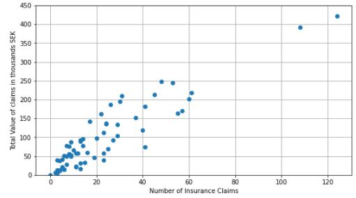
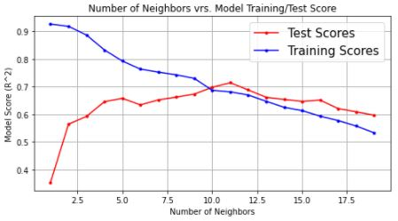
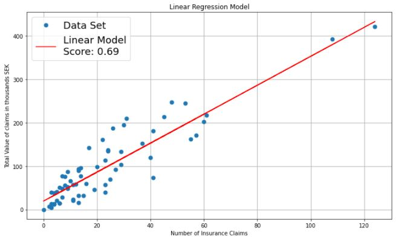

- Github
- codyjamesbrooks@gmail.com
Machine Learning with Swedish Insurance Claims

The Data Set
I pulled the data for this analysis off of the internet (source). It contains 63 ordered pairs, so it should be considered a very small data set and any conclusions drawn should be taken with that in mind. The purpose of this analysis was two fold. The first purpose was academic, I wanted to pratice various machine learning model fitting teqniques on an active data set. The second purpose, and the overall point of Machine Learning at large, was to be able to create a predictive model with which we could draw conclusions from. The 63 ordered pairs (displayed to left) form an excellent feature trget relationship. Below I will spend some time talking about the different models that I fit to the data.
K Nearest Neighbors Regression Model
The first model I fit on to the data was a k-nearest neighbors regression model. The highest test score for this model was found to be .71. Inside the project you can see that I performed a quick test to find an optimal value for k, and also included a graph showing exactly what the this predictive model would look like. I discovered that, at its best a nearest neighbors analysis would underfit the data set, and would fail to produce a trustworthy predictive model.